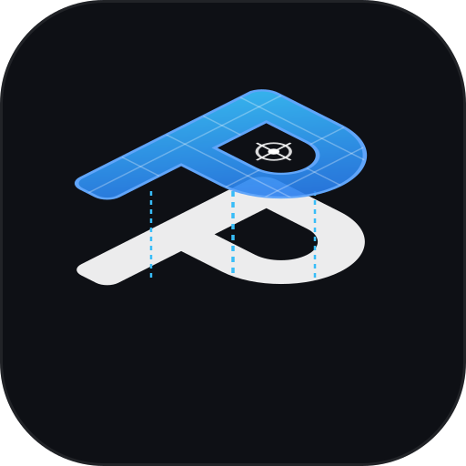
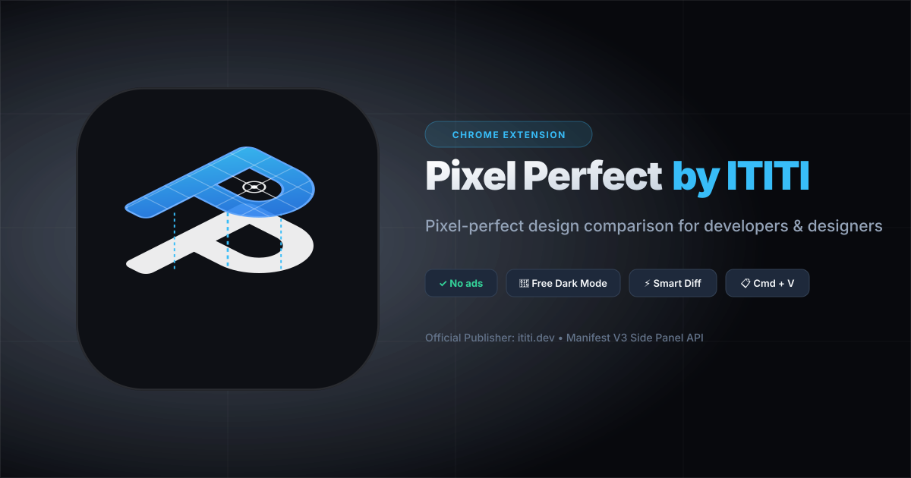

Pixel-perfect design comparison for developers & designers
Две парящие ромбические плоскости в форме буквы «P»: нижний слой вёрстки (чистый белый) и верхний слой макета (электрический синий с точной сеткой 45×45px и сквозным оптическим прицелом).

Глубокий чёрный фон иконки идеально гармонирует с графитовым окружением macOS
Скворкл с контурной обводкой четко очерчивает иконку на светлых поверхностях
Резкая читаемость в реальном размере 16px среди других расширений
Для социальных сетей, лендинга ititi.dev, превью в Twitter/X, Slack, Telegram
